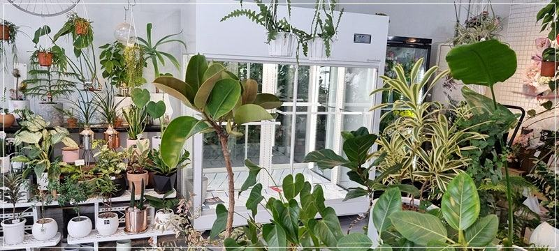
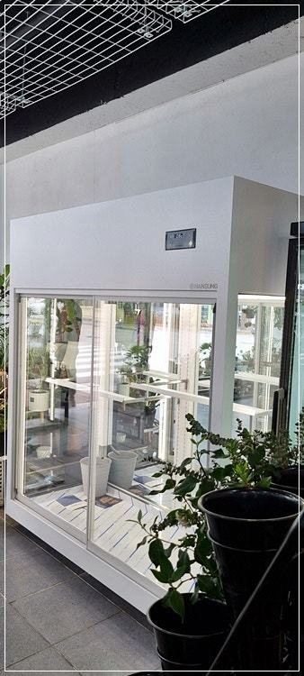
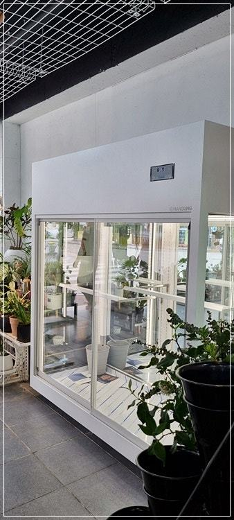
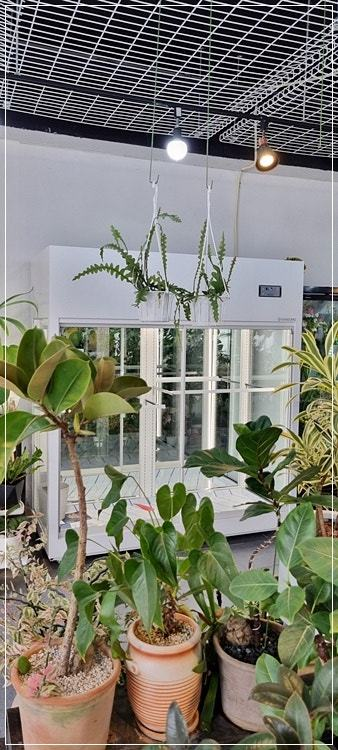
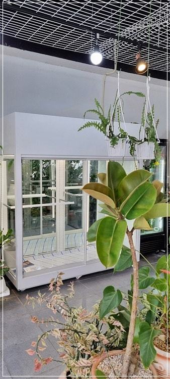
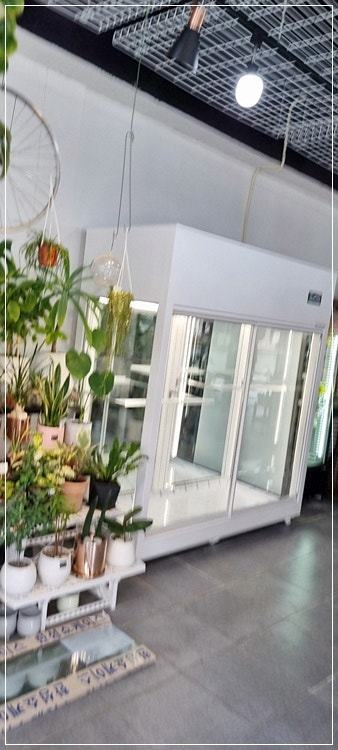
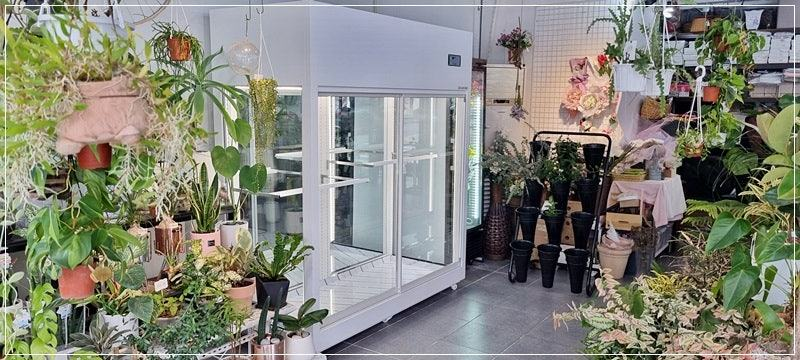
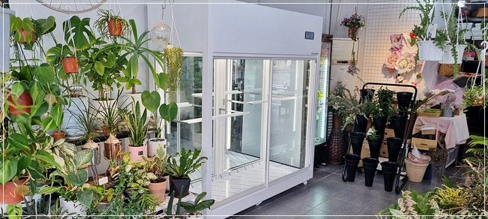
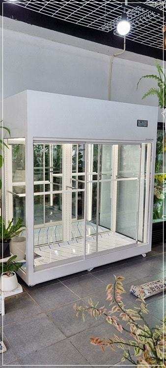
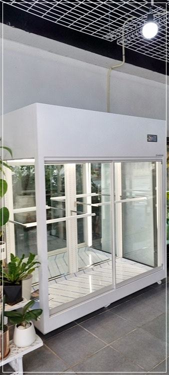

꽃냉장고
꽃냉장고 조명, 꽃 색을 그대로 보여 주는 LED 고르기

꽃냉장고 조명은 햇빛에 가까운 주백색 LED를 기본으로, 열이 적고 단마다 고르게 비추는지를 먼저 보셔야 합니다. 조명 색이 붉거나 푸르면 꽃 색이 왜곡되고, 열이 많으면 꽃잎이 빨리 마르기 때문에 밝기보다 색과 열을 우선으로 고르세요.
안녕하세요. 꽃집 냉장 쇼케이스를 상담부터 설치까지 직접 맡는 한성쇼케이스입니다.
꽃집 손님은 꽃냉장고 앞에 서서 색을 보고 꽃을 고릅니다. 그런데 쇼케이스 안에서는 분명 연분홍이던 장미가 밖에 꺼내 보니 살구색이라면, 손님도 사장님도 당황스럽죠.
이런 차이는 대부분 조명 때문에 생깁니다.
꽃냉장고 조명은 꽃을 예쁘게 보이게 하는 역할과 함께, 하루 종일 켜져 있는 동안 꽃에 부담을 주지 않아야 하는 역할도 맡고 있습니다.
오늘은 꽃냉장고 조명을 정할 때 확인할 색, 열, 밝기, 그리고 프레임과의 조화를 정리해 드리겠습니다.
1. 주백색이 기본인 이유
꽃은 손님이 색을 보고 고르는 상품이라, 쇼케이스 안과 밖에서 색이 다르게 보이면 안 됩니다. 붉은 기가 강한 조명은 흰 꽃을 누렇게, 푸른 기가 강한 조명은 따뜻한 색 꽃을 차갑고 탁하게 보이게 합니다.
햇빛에 가까운 주백색 LED는 꽃 본래의 색을 자연스럽게 보여 줍니다. 손님이 꽃다발을 받아 들고 밖으로 나갔을 때도 매장에서 본 색 그대로라 실망할 일이 줄어듭니다.
- 주백색 LED를 기본으로 검토하세요.
- 흰 꽃과 붉은 꽃을 넣고 색이 자연스러운지 보세요.
2. 열이 적은 조명이어야 합니다
꽃냉장고 조명은 영업 시간 내내 켜져 있습니다. 열이 많은 조명을 쓰면 조명 가까운 윗단 꽃잎부터 마르고, 그 칸만 온도가 올라 냉장고가 더 오래 돌아가게 됩니다.
LED는 발열이 적어 이런 부담을 줄여 줍니다. 조명이 꽃 바로 위에 붙어 있지 않고 적당한 거리를 두고 설치되는지도 함께 확인해 보세요.
특히 여름철에는 매장 온도가 높아 조명 열까지 더해지면 윗단 꽃이 유난히 빨리 처집니다. 윗단에는 비교적 강한 꽃을, 예민한 꽃은 가운데 단에 두는 식으로 진열 위치를 나눠 보시는 것도 방법입니다.


3. 단마다 고른 밝기
꽃냉장고는 키 큰 꽃을 세우는 아래 칸과 작은 화분이나 꽃다발을 올리는 위 칸이 함께 있는 경우가 많습니다.
조명이 위쪽 한 줄에만 있으면 아래 칸은 어둡게 보여 꽃이 시들어 보입니다.
단마다 조명이 들어가는지, 빛이 한쪽으로 몰리지 않고 고르게 퍼지는지 보세요. 선반을 유리로 하면 빛이 아래까지 통과해 전체가 밝아 보이는 효과도 있습니다.
밤에 매장 불을 끄고 쇼케이스 조명만 켜 두는 꽃집이라면, 바깥에서 봤을 때 어두운 칸이 없는지도 확인해 보세요.
쇼윈도 너머로 보이는 꽃냉장고는 영업이 끝난 뒤에도 매장을 알리는 간판 역할을 합니다.
- 단별 조명 유무를 확인하세요.
- 유리 선반으로 빛이 아래까지 닿게 할 수 있는지 물어보세요.
4. 프레임 색과 함께 정하세요
같은 조명이라도 프레임 색에 따라 꽃이 다르게 보입니다. 화이트 프레임은 빛을 부드럽게 반사해 꽃 색을 깨끗하고 화사하게 보여 주고, 블랙이나 짙은 우드 프레임은 꽃을 또렷하게 강조해 고급스러운 분위기를 냅니다.
조명을 정할 때 프레임 색, 유리 타입, 매장 천장 조명 색까지 함께 놓고 보셔야 전체가 어울립니다.
제작 전에 이 조합을 상담에서 먼저 확인해 보세요.
완성품 사진만으로는 조명 색 차이를 판단하기 어려우니, 가능하다면 실제 설치된 매장 사례를 보거나 조명 샘플 색을 상담 때 직접 확인해 보시길 권해 드립니다.
체크리스트
- 주백색 LED 여부
- 조명 발열과 설치 거리
- 단별 조명과 밝기 균일함
- 유리 선반 사용 여부
- 프레임 색과 매장 조명 조화
화이트 프레임으로 꽃을 돋보이게 한 꽃쇼케이스 사례
봄철 꽃집 창업이 늘던 때 납품한 꽃집 냉장 쇼케이스입니다. 고객님 사업장에 직접 방문해 제작 상담부터 하나씩 조율했고, 고객님이 원하신 하얀색 쇼케이스로 꽃의 매력을 더 살리는 방향을 잡았습니다.
화이트 프레임은 깨끗하고 청결해 보이는 인상이 있어 꽃쇼케이스에 많이 쓰이는 색입니다.
제작 전에는 문 여는 방식, 내부 단 수, 유리 타입을 상세하게 정한 뒤 생산에 들어갔고, 완성 후에는 교육받은 설치 인력이 직접 배송과 설치를 맡았습니다.
설치하면서 이후 A/S와 서비스 문의는 상담센터로 언제든 연락하실 수 있다는 점도 함께 안내해 드렸습니다.










자주 묻는 질문
꽃냉장고 조명을 더 밝게 하면 꽃이 잘 팔리나요?
밝기만 높이면 빛 반사와 열이 늘 수 있습니다. 꽃 색이 자연스럽게 보이는 색과 고르게 퍼지는 빛이 더 중요합니다.
조명 색을 칸마다 다르게 할 수 있나요?
맞춤 제작 단계에서 정하면 가능합니다. 다만 꽃 색이 왜곡되지 않도록 주백색을 기본으로 두고 포인트를 주는 방식을 권해 드립니다.
조명이 꽃 수명에도 영향을 주나요?
열이 많은 조명은 가까운 꽃잎을 마르게 하고 내부 온도를 올릴 수 있습니다. 발열이 적은 LED를 쓰고 꽃과 거리를 두어 설치하면 영향을 줄일 수 있습니다.
매장 조건에 맞춰 만드는 한성쇼케이스
원하시는 제품 사진과 설치할 공간 사진만 보내 주셔도 매장에 맞는 구성을 추천해 드립니다.
- 전국 240여 개 A/S 전담 센터 운영
- 본사 대량 자재 매입으로 품질 대비 합리적인 가격
- 유럽제·삼성 냉각 콤프레셔 적용
- 국내 최초 쇼케이스 전문 디자이너 상주
매장 폭과 원하는 진열 구성을 알려 주세요. 실측과 견적을 안내해 드립니다.
031-986-2458